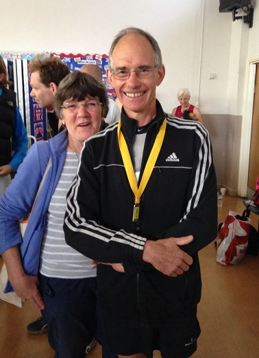
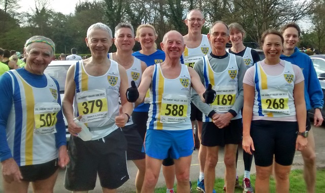

Seventeen members of Sevenoaks AC contested the Kent Grand Prix and Championship 10k race at Darent Valley on 19 April, while supporting the Hospice in the Weald.

James Graham (pictured left) was first M60, Sally Shewell was third W55 and Pauline Dalton third W45 as David Lee led the SAC runners home in twelfth place overall. Unfortunately Darrell Smith pulled a hamstring on the way round and walked/ jogged last 2km but still finished.
The Sevenoaks AC results were:
| Pos- ition | Bib- No. | Finish Time | Chip Time | Name | Gen- der | Cat- egory | Club or Team | Rank |
|---|---|---|---|---|---|---|---|---|
| 12 | 424 | 00:37:26 | 00:37:23 | DAVID LEE | M | SM | Sevenoaks AC | 1 |
| 38 | 92 | 00:39:40 | 00:39:35 | CHRIS DESMOND | M | M50 | Sevenoaks AC | 2 |
| 54 | 169 | 00:41:07 | 00:41:03 | JAMES GRAHAM | M | M60 | Sevenoaks AC | 3 |
| 108 | 2310 | 00:44:21 | 00:44:03 | ANTONY HORLOCK | M | M50 | Sevenoaks AC | 4 |
| 132 | 577 | 00:45:38 | 00:45:25 | PAULINE DALTON | F | W45 | Sevenoaks AC | 5 |
| 140 | 588 | 00:46:00 | 00:45:54 | GEOFFREY VINE | M | M60 | Sevenoaks AC | 6 |
| 148 | 2303 | 00:46:42 | 00:46:40 | DARRELL SMITH | M | M40 | Sevenoaks AC | 7 |
| 157 | 46 | 00:47:00 | 00:46:48 | DUNCAN COCHRANE | M | M50 | Sevenoaks AC | 8 |
| 185 | 578 | 00:48:22 | 00:47:47 | DUNCAN WARWICK-CHAMPION | M | M50 | Sevenoaks AC | 9 |
| 197 | 362 | 00:48:46 | 00:48:33 | STEPHEN NICHOLSON | M | M40 | Sevenoaks AC | 10 |
| 262 | 481 | 00:50:58 | 00:50:41 | JANE MORGAN | F | W35 | Sevenoaks AC | 11 |
| 284 | 48 | 00:51:44 | 00:51:21 | CLAIR THORNTON | F | W35 | Sevenoaks AC | 12 |
| 327 | 268 | 00:53:19 | 00:53:02 | HAPPY FISHER | F | W35 | Sevenoaks AC | 13 |
| 329 | 144 | 00:53:28 | 00:53:12 | SARAH SHEWELL | F | W55 | Sevenoaks AC | 14 |
| 382 | 507 | 00:56:20 | 00:56:05 | JAMES FITZMAURICE | M | M70 | Sevenoaks AC | 15 |
| 423 | 379 | 00:57:51 | 00:57:21 | TONY OSTLERE | M | M60 | Sevenoaks AC | 16 |
| 492 | 568 | 01:01:18 | 01:00:47 | MARIA ASHLEE | F | W35 | Sevenoaks AC | 17 |
The full results are here.
